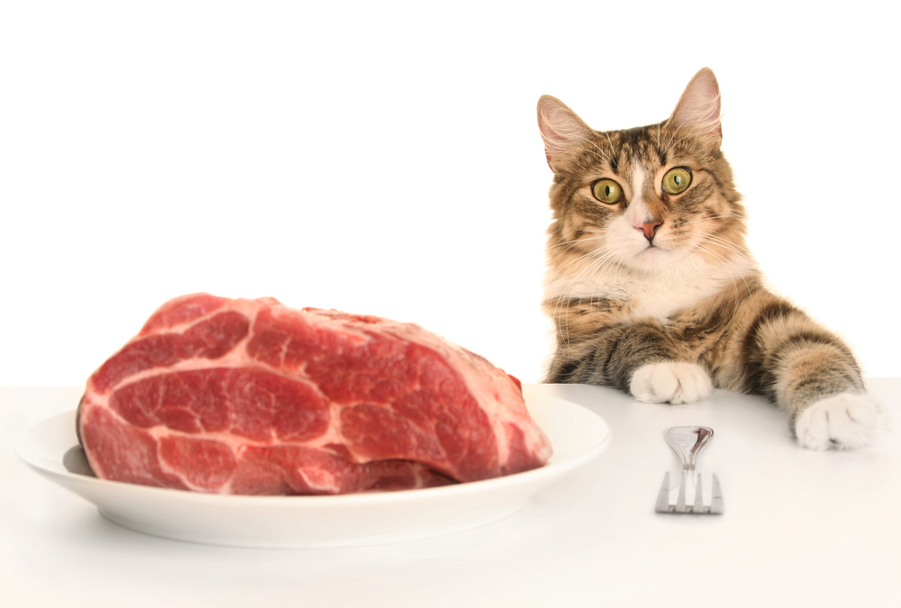

Чим годувати кішку?

Годувати кішку можна кормом, купленим в магазині або приготованим самостійно.
Перший варіант простіший: в цьому випадку вам потрібно тільки вибрати підходящий варіант для тваринки.
Основна складність другого - розробити збалансований раціон з натуральних продуктів. Зробити це краще за допомогою професіонала.
Повернутися до головної сторінки